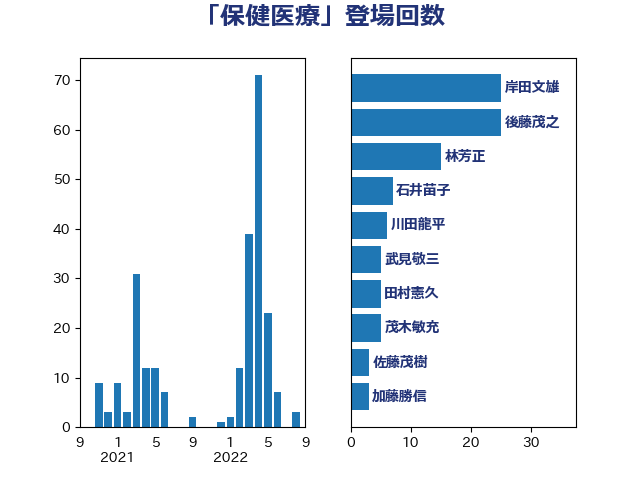

単語「保健医療」

| 岸田文雄 | 自由民主党 | 25 回 |
| 後藤茂之 | 自由民主党 | 25 回 |
| 林芳正 | 自由民主党 | 15 回 |
| 石井苗子 | 日本維新の会 | 7 回 |
| 川田龍平 | 立憲民主党 | 6 回 |
| 武見敬三 | 自由民主党 | 5 回 |
| 田村憲久 | 自由民主党 | 5 回 |
| 茂木敏充 | 自由民主党 | 5 回 |
| 佐藤茂樹 | 公明党 | 3 回 |
| 加藤勝信 | 自由民主党 | 3 回 |
| 佐藤英道 | 公明党 | 2 回 |
| 山本博司 | 公明党 | 2 回 |
| 清水貴之 | 日本維新の会 | 2 回 |
| 矢倉克夫 | 公明党 | 2 回 |
| 石垣のりこ | 立憲民主党 | 2 回 |
| 竹谷とし子 | 公明党 | 2 回 |
| 自見はなこ | 自由民主党 | 2 回 |
| 芳賀道也 | 国民民主党 | 2 回 |
| 菅義偉 | 自由民主党 | 2 回 |
| 野間健 | 立憲民主党 | 2 回 |
| 青木一彦 | 自由民主党 | 2 回 |
| 青木愛 | 立憲民主党 | 2 回 |
| おおつき紅葉 | 立憲民主党 | 1 回 |
| 上川陽子 | 自由民主党 | 1 回 |
| 勝目康 | 自由民主党 | 1 回 |
| 古川禎久 | 自由民主党 | 1 回 |
| 古賀篤 | 自由民主党 | 1 回 |
| 吉田宣弘 | 公明党 | 1 回 |
| 塩川鉄也 | 日本共産党 | 1 回 |
| 大塚耕平 | 国民民主党 | 1 回 |
| 大島敦 | 立憲民主党 | 1 回 |
| 宗清皇一 | 自由民主党 | 1 回 |
| 小沢雅仁 | 立憲民主党 | 1 回 |
| 山際大志郎 | 自由民主党 | 1 回 |
| 本田太郎 | 自由民主党 | 1 回 |
| 橋本聖子 | 無所属 | 1 回 |
| 武田良太 | 自由民主党 | 1 回 |
| 浅田均 | 日本維新の会 | 1 回 |
| 玉木雄一郎 | 国民民主党 | 1 回 |
| 石川博崇 | 公明党 | 1 回 |
| 石川大我 | 立憲民主党 | 1 回 |
| 福島みずほ | 社会民主党 | 1 回 |
| 秋野公造 | 公明党 | 1 回 |
| 萩生田光一 | 自由民主党 | 1 回 |
| 谷合正明 | 公明党 | 1 回 |
| 赤澤亮正 | 自由民主党 | 1 回 |
| 足立康史 | 日本維新の会 | 1 回 |
| 金子恭之 | 自由民主党 | 1 回 |
| 鈴木貴子 | 自由民主党 | 1 回 |
| 高橋光男 | 公明党 | 1 回 |
| 高橋千鶴子 | 日本共産党 | 1 回 |